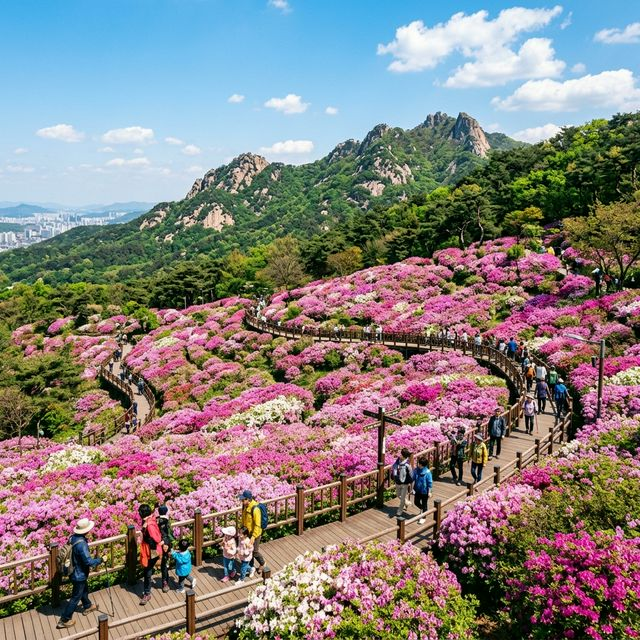
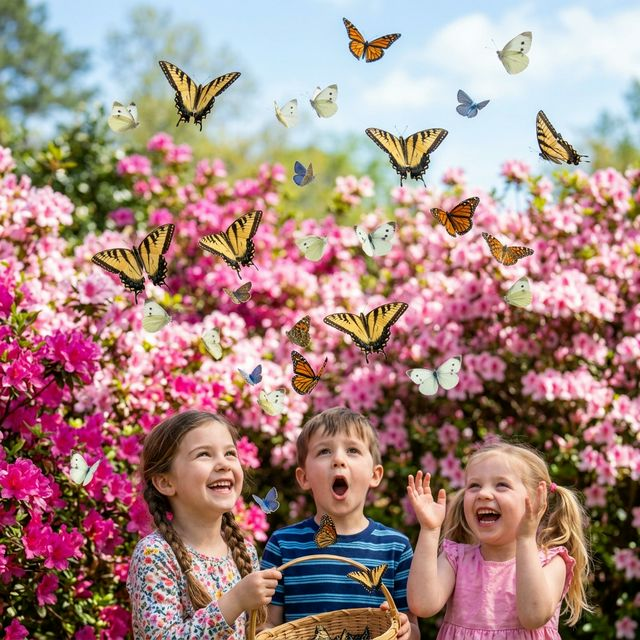
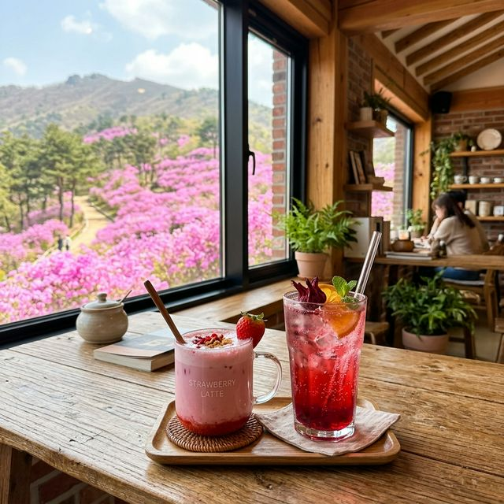

서울 불암산 철쭉제 2026 실시간 개화 상황 도심 속 분홍빛 치유 공간 나비정원 산책 코스
서울 도심 한복판에서 마주하는 10만 송이 분홍빛의 파도! 2026년 4월, 노원구 불암산 자락은 지금 온통 선명한 분홍빛 철쭉으로 장식되어 시민들의 발길을 이끌고
있습니다. 멀리 떠나지 않아도 산 하나를 통째로 뒤덮은 화려한 꽃 잔치를 즐길 수 있는 '불암산 철쭉제'는 노원구민들뿐만 아니라 서울 시민 모두의 사랑을 받는 봄의 명소인데요. 오늘 개막식을 기점으로
본격적인 축제가 시작된 그 뜨거운 현장의 기운을 생생하게 전해드립니다.
1. 2026 불암산 철쭉제 기본 일정 및 행사 장소 가이드
올해 '2026 불암산 철쭉제'는 2026년 4월 16일(목)부터 4월 26일(일)까지 11일간 불암산 나비정원과 힐링타운 일대에서 화려하게 펼쳐집니다. 특히 오늘인 4월
18일(토) 오후 3시에는 철쭉동산 메인 무대에서 공식 개막식이 열리며, 수천 마리의 나비를 하늘로 날려 보내는 '나비 날리기 퍼포먼스'가 예정되어 있어 많은 인파가 몰릴 것으로 예상됩니다. 축제 기간
내내 노원구의 문화 에너지가 이곳 불암산 힐링타운으로 집중됩니다.
주요 행사가 열리는 불암산 나비정원은 남녀노소 누구나 쉽게 걸을 수 있도록 무장애 덱 산책로가 잘 정비되어 있는 것이 큰 특징입니다. 유모차나 휠체어를 이용하는 가족 단위 방문객들도 불편함 없이 해발
200m 높이의 철쭉동산 정상까지 도달하여 분홍빛 평원을 감상할 수 있습니다. 힐링타운 내부에는 나비정원뿐만 아니라 산림치유센터, 목공예 체험장 등이 밀집해 있어 하루 종일 시간을 보내기에 부족함이
없습니다.

불암산 자락을 화려하게 덮은 10만 송이 철쭉의 장관 — AI 제작 이미지
2. 실시간 개화 상황: 4월 18일 현재 철쭉은 몇 퍼센트?
가장 궁금해하실 실시간 개화 상황을 알려드립니다. 4월 18일 현재, 불암산 철쭉동산의 전체적인 개화율은 약 60~70% 수준입니다. 양지바른 낮은 곳은 이미 만개하여
선명한 분홍색을 띠고 있으며, 그늘진 숲 안쪽이나 지대가 높은 구역은 이제 막 봉오리를 터뜨리기 시작했습니다. 전체 구역이 완벽하게 붉게 물드는 만개 시점은 축제 중반부인 4월 20일에서 23일 사이가
될 것으로 예측됩니다.
철쭉은 벚꽃보다 꽃잎이 질기고 개화 기간이 길어 축제 마지막 날까지도 충분히 아름다운 모습을 감상할 수 있습니다. 다만, 변덕스러운 봄 날씨에 대비하여 실시간 현장 소식이 궁금하다면 노원구청 공식
블로그나 인스타그램의 실시간 태그를 확인하시는 것이 좋습니다. 오늘처럼 맑고 기온이 높은 날씨가 며칠만 더 이어진다면, 이번 주말이 지나기 전에 불암산은 그야말로 '불타는 분홍산'으로 변신할 것입니다.
3. 개막식 스페셜: 나비 날리기 퍼포먼스(4월 18일 15시)
오늘 방문하시는 분들이 절대 놓쳐선 안 될 이벤트는 바로 정식 개막식의 하이라이트인 나비 날리기입니다. 불암산 나비정원에서 정성껏 기른 배추흰나비와 호랑나비 수천 마리가
철쭉꽃 위로 동시에 날아오르는 광경은 그야말로 환상적인 장관을 연출합니다. 아이들에게는 생명의 신비로움을 일깨워주고, 어른들에게는 동심으로 돌아가는 특별한 경험을 선사합니다. 이 행사는 사진
작가들에게도 놓칠 수 없는 최고의 셔터 찬스로 꼽힙니다.
개막식 무대에서는 나비 날리기 외에도 노원구 내 오케스트라와 합창단의 축하 공연이 이어집니다. 꽃밭 한가운데 울려 퍼지는 선율은 철쭉의 향기와 어우러져 관람객들의 감성을 자극합니다. 개막 행사가 끝난
뒤에는 나비정원 내부 관람도 함께 추천합니다. 국내외의 희귀한 나비 표본들과 실제 살아 움직이는 나비들을 관찰할 수 있는 실내 전시관은 교육적인 가치도 매우 높아 아이들의 현장 학습 장소로 최적입니다.

철쭉 위로 날아오르는 나비들의 환상적인 퍼포먼스 — AI 제작 이미지
4. 불암산 힐링타운의 백미: 무장애 숲길과 전망대
불암산 철쭉제가 타 지역 축제와 차별화되는 지점은 바로 '누구나 누리는 숲'이라는 철학입니다. 나비정원에서 시작하여 철쭉동산을 거쳐 불암산 정망대까지 이어지는 길은 계단이
없는 완만한 경사로 이루어진 '무장애 산책로'입니다. 휠체어를 타거나 거동이 불편하신 어르신들도 천천히 숲의 기운을 느끼며 정상 부근까지 올라갈 수 있어 가족 삼대가 함께 방문하기에 이보다 좋은 곳은
없습니다.
약 15분 정도 덱 길을 따라 올라가면 도착하는 불암산 전망대는 또 다른 감동을 줍니다. 이곳에 서면 방금 걸어온 분홍색 철쭉 바다를 한눈에 내려다볼 수 있을 뿐만
아니라, 시야가 맑은 날에는 북한산과 도봉산, 그리고 멀리 롯데월드타워까지 아우르는 서울의 스카이라인을 조망할 수 있습니다. 전망대에는 엘리베이터가 설치되어 있어 이동 지원이 필요한 분들도 막힘 없이
전경을 감상할 수 있습니다.
5. 올해 처음 도입된 이색 체험: '숲멍 대회'와 곤충 축제
2026년 철쭉제에서 새롭게 선보이는 콘텐츠 중 가장 눈길을 끄는 것은 '제1회 불암산 숲멍 대회'입니다. 바쁜 도시 생활 속에서 아무것도 하지 않고 숲을 바라보며 뇌를
쉬게 하는 이 대회는 참가자들에게 이색적인 휴식을 제공합니다. 가장 안정적인 심박수를 유지하는 사람이 우승하는 방식으로 운영되어, 치열한 경쟁보다는 평온함을 찾는 과정 자체가 하나의 축제가 됩니다.
참가자들에게 지급되는 힐링 키트와 함께 숲속 명상을 즐기는 모습은 보는 것만으로도 여유를 줍니다.
아이들을 위한 '한국 곤충 페스티벌'도 피크닉장에서 함께 열립니다. 평소 도시에서 보기 힘든 반딧불이와 누에, 사슴벌레 등을 직접 손으로 만져보고 생태를 관찰할 수 있는
부스가 마련되었습니다. 살아있는 곤충들의 움직임을 관찰하는 아이들의 눈빛은 호기심으로 가득 차며, 현장에서 나누어주는 생태 일기장은 체험의 깊이를 더해줍니다. 숲멍 대회와 곤충 축제는 주말 위주로
운영되니 방문 전 세부 일정 확인을 권장합니다.
6. 카페 포레스트: 철쭉 시즌 한정 음료와 힐링 타임
축제를 즐기다 잠시 쉬어갈 곳을 찾으신다면 나비정원 입구에 위치한 '카페 포레스트'를 추천합니다. 이곳은 노원구에서 운영하는 장애인 일자리 창출 카페이기도 하여 더욱 의미
있는 공간입니다. 축제 기간에는 오직 이때만 맛볼 수 있는 '철쭉 에이드'와 '분홍 딸기 라테' 등 시즌 한정 메뉴를 출시합니다. 꽃의 색감을 그대로 옮겨놓은 듯한 에이드는 맛은 물론이고 사진 촬영용
아이템으로도 손색이 없습니다.
카페 창가 자리에 앉으면 통유리 너머로 펼쳐지는 철쭉 정원의 풍경을 한가로운 시선으로 감상할 수 있습니다. 야외 테라스석은 반려동물 동반이 가능하여 강아지와 함께 산책
나온 시민들에게 큰 인기를 얻고 있습니다. 카페 내부에서는 지역 예술가들이 만든 굿즈와 철쭉 모양 쿠키도 판매하고 있으니, 달콤한 휴식과 함께 작은 기념품을 챙겨보시는 것도 소소한 즐거움이 될
것입니다.

축제 분위기를 미각으로 즐기는 카페 포레스트의 시즌 한정 음료 — AI 제작 이미지
7. 교통 정보 및 주차 팁: 대중교통이 최고의 선택인 이유
불암산 철쭉제는 매년 주차난으로 몸살을 앓는 곳입니다. 행사장의 상설 주차장은 규모가 작아 주말 오전 10시만 되어도 이미 만차 상태이며, 인근 도로 정체가 매우 심각합니다. 따라서 가장 가볍고 빠르게
축제를 즐기는 방법은 지하철 4호선 상계역을 이용하는 것입니다. 상계역 2번 출구에서 나오면 안내 표시판이 잘 되어 있으며, 도보로 약 15~20분 정도 동네 길을 따라
걷다 보면 나비정원 입구에 도착하게 됩니다.
부득이하게 차량을 가지고 오셔야 한다면 인근 학교 운동장을 개방하는 임시 주차장을 미리 확인하세요. 주말에는 중계중, 중계초, 영신여고 등의 운동장이 관람객들에게
개방됩니다. 다만, 학교 입구 역시 혼잡할 수 있고 저녁 7시에는 반드시 출차해야 하는 규칙이 있으니 주의가 필요합니다. 주차장 검색보다는 내비게이션에 '불암산 힐링타운'보다는 차라리 상계역 인근 공영
주차장을 검색하고 한 정거장만 버스로 이동하는 것이 오히려 시간을 아끼는 비법입니다.
8. 주변 연계 코스: 당현천 수변공원 산책과 중계동 학원가 맛집
불암산 철쭉 관람으로만 하루를 마치기 아쉽다면 당현천 수변공원 연계 코스를 추천합니다. 나비정원에서 내려와 10분 정도 걸으면 만날 수 있는 당현천은 최근 수변 카페와
화단이 대대적으로 정비되어 걷기 좋은 길로 거듭났습니다. 졸졸 흐르는 냇물 소리를 들으며 걷다 보면 노원의 또 다른 봄의 매력을 발견할 수 있습니다. 저녁 무렵에는 당현천 곳곳에 설치된 예술 작품들이
조명을 밝혀 밤 산책의 묘미를 더해줍니다.
식사는 인근 중계동 학원가(은행사거리) 먹자골목이 정석입니다. 대규모 학원가답게 합리적인 가격의 돈가스, 칼국수, 떡볶이 맛집이 밀집해 있어 아이들과 함께 외식하기에
좋습니다. 또한 화력 좋은 숯불 갈비집이나 시원한 막국수 전문점들도 많아 관람 후 허기를 달래기에 부족함이 없습니다. 노원구에서 발행하는 지역 화폐나 온누리 상품권을 사용할 수 있는 상점도 많으니,
알뜰하게 지역 상권까지 살리는 보람 있는 나들이를 즐겨보세요.
9. 방문 전 체크리스트: 준비물 및 관람 에티켓 안내
마지막으로 쾌적한 관람을 위한 필수 체크리스트입니다. 철쭉동산은 전체적으로 덱 길이지만, 유적지 안쪽 산림치유센터 구역까지 둘러보려면 가벼운 '트레킹화'나 '운동화'
착용이 필수입니다. 산기슭이라 기온 차가 있을 수 있으니 가벼운 겉옷을 챙기시고, 야외 활동이 많으므로 자외선 차단제와 양산도 준비하시기 바랍니다. 특히 주말에는 편의점 줄이 길 수 있으니 개별 생수는
미리 준비해 오시는 것이 편리합니다.
무엇보다 중요한 것은 성숙한 문화 시민의 관람 매너입니다. 철쭉은 꽃잎이 약해 손으로 만지면 금세 상처가 납니다. 사진을 찍기 위해 울타리 내부로 들어가거나 꽃가지를 꺾는
행위는 절대 삼가야 합니다. 발생한 쓰레기는 반드시 다시 가져가거나 지정된 장소에 배출하여, 유네스코 생물권 보전 지역인 불암산의 자연을 지켜주세요. 여러분의 작은 배려가 모일 때, 10만 송이 분홍빛
꽃바다는 다음 해에도 우리 곁을 더욱 아름답게 찾아올 것입니다.
#불암산철쭉제
#서울철쭉축제
#2026불암산철쭉제
#불암산나비정원
#노원구가볼만한곳
#서울봄나들이추천
#철쭉개화시기
#무장애숲길
#가족주말나들이
#인생샷명소